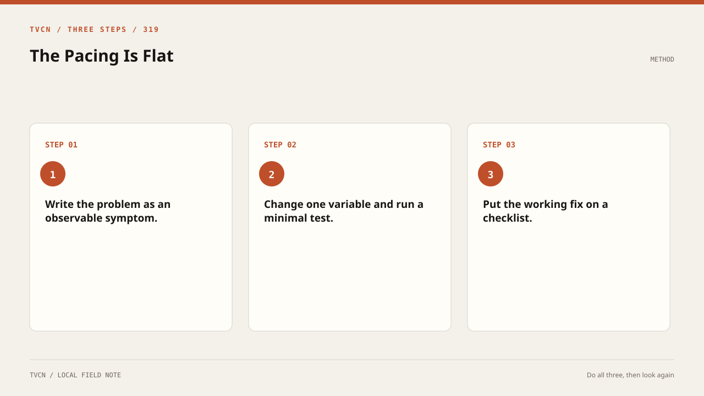

On set
If three shots run the same length, change one: long, short, long. Give the audience air.
Do this
Flat pacing: change shot lengths. Three shots of the same length in a row lose the audience.
- List the shot lengths in a scene and avoid three identical ones in a row.
- Shorten before information, hold longer after a reaction.
- Build rhythm from action and sound, not a cut on every music beat.
Avoid
Do not quick-cut the whole film; without breathing room, the audience tires.
Three-step flow

Three causes
For “The Pacing Is Flat”, check three directions first. Change one variable, record a 30-second comparison, and see which link the change follows.
| Cause | Signal on set | Five-minute test |
|---|---|---|
| Equal shot lengths | The scene feels like a slideshow | Mark the information change every ten seconds |
| No reactions | Action happens without anyone’s attitude toward it | Add a reaction after each action |
| Constant music | The score stays at one level and the cut never breathes | Let music enter and leave at turns |
On-set diagnosis
- Watch without music and mark what the audience learns every ten seconds.
- Count shots and average length per scene; identical lengths flatten rhythm.
- Find three places that can hold for one second: action completion, line landing, reaction.
Fix
Rhythm is not shorter shots; it is information increasing and decreasing. Cut on action first, then let a pause carry pressure.
- Cut on action: a door opens, a cup lands, a body turns; the completion point is the cut.
- Shorten empty shots to the one second that carries information; never use them as filler.
- Hold one pause before each turn so the audience expects the next line.
- Bring music in or out at turns; do not wallpaper the whole scene.
Failure cases
With “The Pacing Is Flat”, these three moves make it worse. Pick one replacement action and do not change three variables at once.
| Failure | Why it gets worse | Replace with |
|---|---|---|
| Speed everything up | The audience cannot read the frame and feels dizzy | Only shorten shots with no information |
| Cut every line | The performance breaks into fragments | Let one action span two shots |
| Push with music | The score peaks but the picture has not changed | Change the information first, then add music |
Acceptance table
Acceptance is not “it feels better”; all four must be identifiable, playable and logged.
| Check | Pass line | Log |
|---|---|---|
| First 30 seconds | At least three information changes | Mark each block |
| Shot lengths | Not every shot is the same length | Timeline statistics |
| Pause | At least one one-second pause carries pressure | Review the turn |
| Music | Music enters and exits; it is not continuous | Solo the music track |
Image note. Covers, diagrams and step images on this page are editorial illustrations or structure diagrams, not photographs of a test performed here; they are not evidence of measured gear performance. Where an image is AI-assisted, the caption says so. Read the test conditions in the text before treating an image as proof.